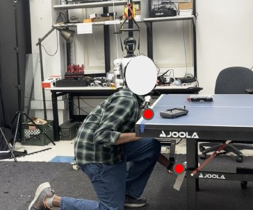

Learning humanoid interactive skills
VICARVideo Imitation with Contact-Aware Retargeting for Humanoid Interactive Skills
Learn from human videos.
Preserve the contacts that make a skill work.
SUMMARY
Read the full abstract
Third-person human videos offer a scalable alternative to task-specific reward engineering, teleoperation, and manually scripted demonstrations for humanoid loco-manipulation. VICAR learns interactive humanoid skills while preserving world-frame contact poses, motion speed, and collision clearance.
From observation to execution
A pipeline built around contact
Seven stages, one at a time. Choose a stage or step through them in order.

Step 1 of 7
Watch
III-A · Human videos
Start from one ordinary third-person video of a person doing the task, here reaching under a table. Red dots mark where their hands touch the world.

01 — Table tennis
Six serves. Distinct styles.
Watch the humanoid execute each serve, from simple strokes to spin.
02 — Beyond serving
Reach, support, lift, climb.
Human demonstrations and robot execution, side by side.
03 — Explore in 3D
Step inside the motion.
Choose a skill, explore its contact settings, and replay the adapted motion.
Step inside the motion
Explore the saved G1 motion in an interactive 3D scene.
Powered by Viser · loads on demandOrbit, zoom, and use the timeline to inspect each motion.
Citation
Acknowledgements
We thank Dhwani Mundra for designing this website and for her careful review of the videos.